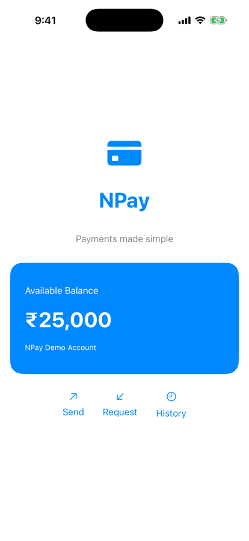

Part 1 · Our NPay milestone (section 1)
Milestone 2.6: a styled, reusable NPay
Change
- A styled BalanceCard
- Quick actions as tiles
- Shared card style
How
- Composition and modifiers
- Not a new screen architecture

Before: Lesson 2.5

After: Milestone 2.6
Part 3 · Order and the layout engine (section 14)
Frame, padding, background: three orders
The card’s order (top)
VStack(alignment: .leading, spacing: 12) {
Text("Available Balance")
Text("₹25,000")
Text("NPay Demo Account")
}
.frame(maxWidth: .infinity, alignment: .leading)
.padding(24)
.background(.blue)All three measured
370.0 × 145.0 pt
What we saw
- frame ↔ padding: no change here
- bg before padding: blue shrinks
- Transformations, not properties

frame→padding→bg · padding→frame→bg · frame→bg→padding
Part 5 · Foreground style vs background (section 8)
Two different roles
Two modifiers
Text("NPay")
.foregroundStyle(.blue)
Text("NPay")
.background(.blue).blue
- Inferred from the expected style type
- No full type name needed

Left: foregroundStyle. Right: background (.largeTitle)
Different roles
foregroundStyle: the foreground (the glyphs)background: a view behind
Part 6 · Complete NPay code (sections 11, 21)
ContentView assembles; components draw
QuickAction.swift
struct QuickAction: View {
let symbol: String
let title: String
var body: some View {
VStack(spacing: 8) {
Image(systemName: symbol)
.font(.title2)
Text(title)
.font(.caption)
}
.foregroundStyle(.blue)
.frame(maxWidth: .infinity)
.padding(.vertical, 12)
.background(Color.blue.opacity(0.08),
in: RoundedRectangle(cornerRadius: 12))
}
}ContentView
- Header: icon, title, subtitle
BalanceCard()HStack(spacing: 30)of 3QuickActions
Checkpoint 2.6
- Reusable components
- Consistent spacing and style
Milestone 2.6